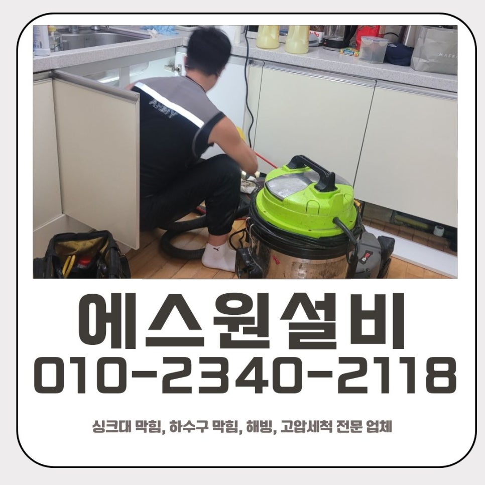
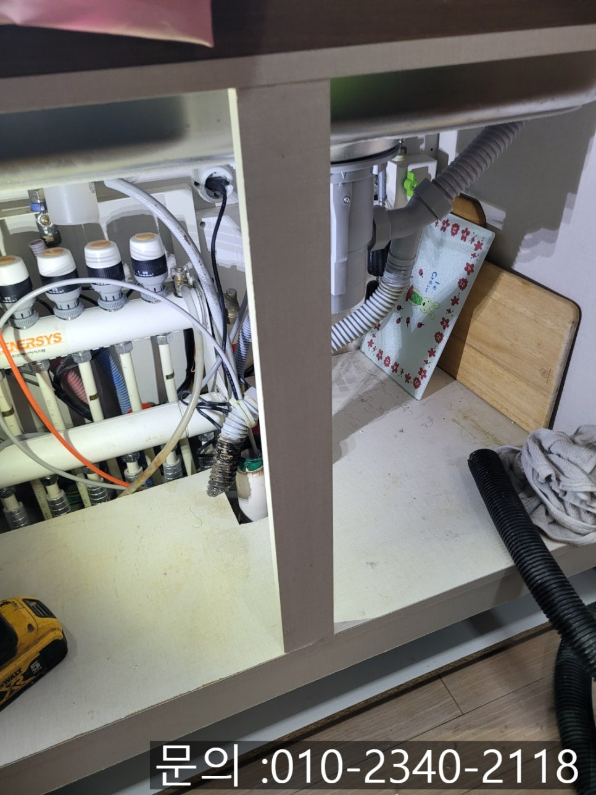
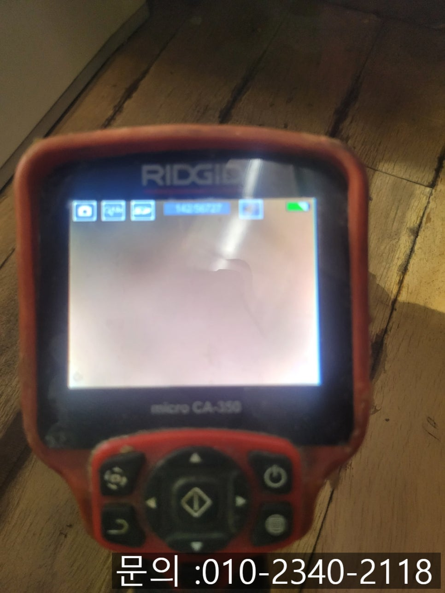
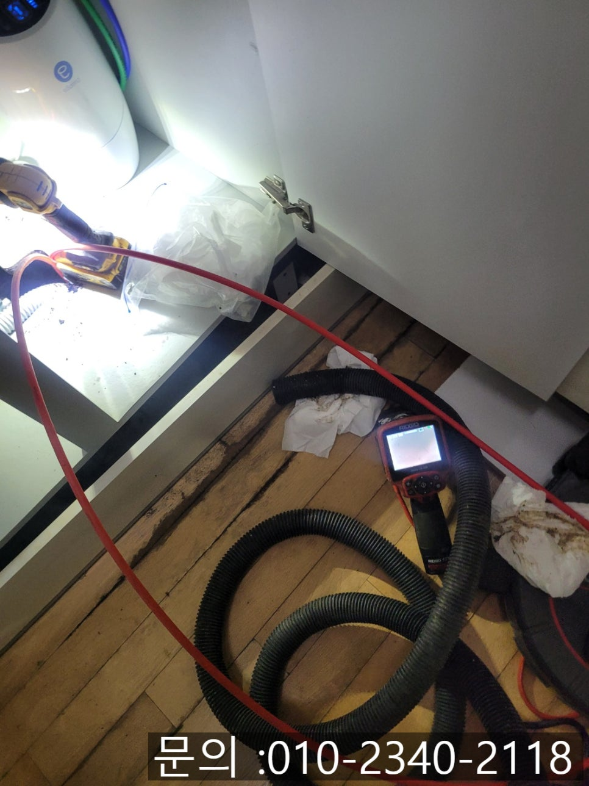
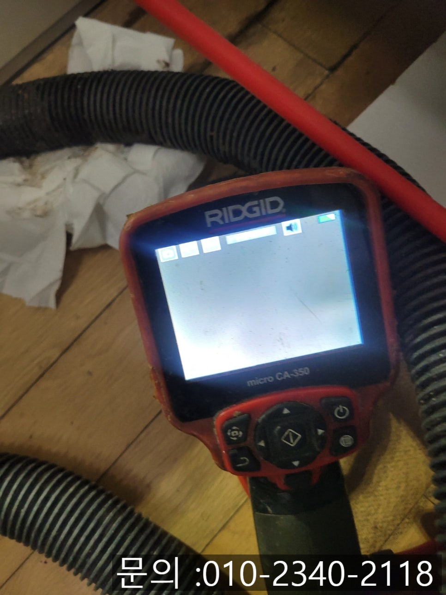
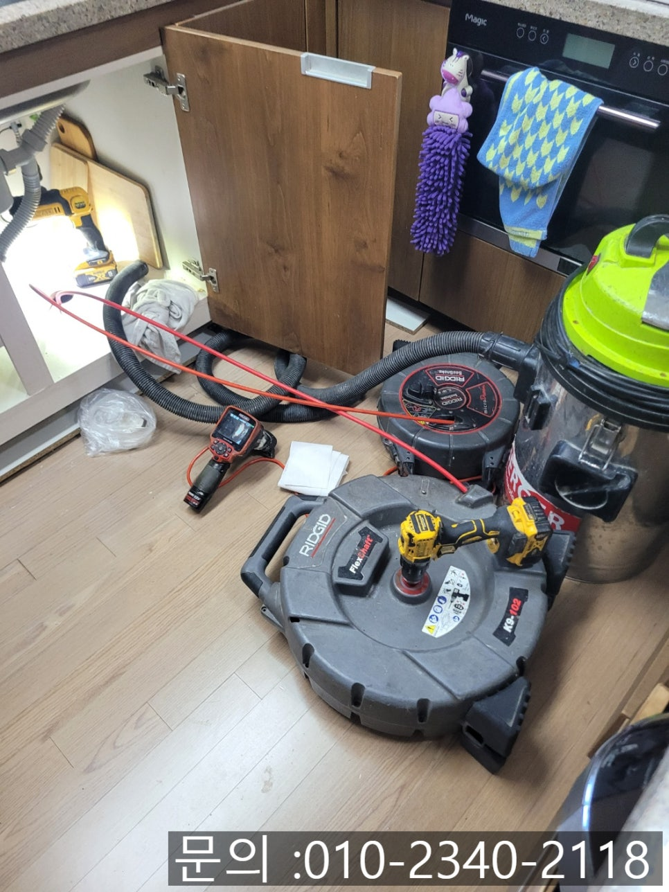
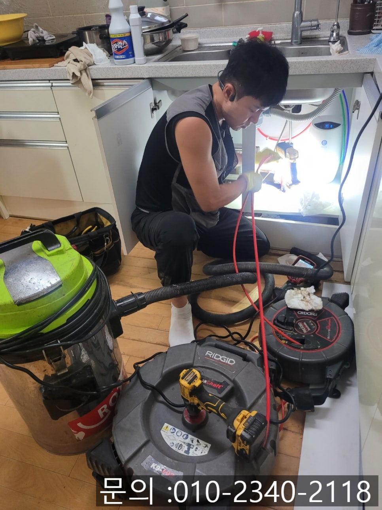

🏠 파장동 싱크대 막힘 수원 연무동 배관 기름때 청소 해결 업체
수원 싱크대막힘 전문 시공 후기

📋 작업 개요
- 위치: 수원
- 서비스 유형: 싱크대막힘, 배관막힘, 역류해결, 뚫는업체, 배관청소, 고압세척
- 작업 일시: 2025. 7. 29. 12:16
- 업체명: 하수구수사대 (010-5615-2118)
🔍 문제 상황
안녕하세요.
연무동 배관 기름때 청소 해결하는 업체 에스원 설비입니다.
요즘 무더위가 계속되고 있죠? 이런 덥고 습한 날씨에 싱크대가 막혀 물이 안 내려가고 역류까지 된다면, 그 답답함과 불쾌함은 이루 말할 수 없을 겁니다. 특히 여름철에는 온도가 높아 세균이 빠르게 번식하기 때문에 막힌 싱크대에서 올라오는 냄새까지 더해져 위생적으로도 매우 좋지 않은 환경이 됩니다.

🔎 원인 분석
💡 전문가 진단: 정밀 진단 장비를 사용하여 슬러지의 고착 여부를 판명하고 타격/세척 작업을 실시했습니다.
한 가정집에서 "싱크대 물이 전혀 내려가지를 않고, 역류까지 되는 것 같아 도저히 사용이 불가능한 중이다"라는 연락을 받게 되었어요. 고객님의 다급함이 수화기 너머로도 느껴졌어요. 고객님과 약속한 방문 시간에 파장동 싱크대 막힘 현장에 방문 드리게 되었어요.
파장동 싱크대 막힘 현장에 도착하니, 육안으로도 싱크대에 물이 잔뜩 고여있는 것을 확인할 수 있었어요. 이미 주방 내에 악취가 번지고 있는 상황이었습니다. 곧바로 배관 내시경을 싱크대 하부 배관으로 넣어 상태를 확인했어요. 카메라 화면을 통해 본 내부는 예상대로 기름때와 음식물 찌꺼기가 한가득 차있었어요.
단순하게 뚫어 뻥이나 배수구 클리너로는 해결이 되지 않는 상황이었어요. 기름이 굳어서 배관 벽에 딱딱하게 붙어 있기 때문에 전문 장비를 활용한 세척이 필요했습니다.

🔧 작업 과정
수원 연무동 배관 기름때 청소 해결 업체 에스원 설비는 플렉스 샤프트 장비를 활용하여 작업을 하기로 결정하였어요. 이 장비는 끝부분에 붙은 갈퀴 모양의 노즐이 강하게 회전하면서 배관 내벽에 끈적하게 달라붙은 슬러지와 이물질 등을 마치 믹서기처럼 갈아내주면서 작동하게 됩니다.
배관 내시경으로 확인해가며 여러 차례 샤프트 장비로 몇 차례 반복작업을 하니, 배관 안쪽이 점점 뚫리기 시작했고, 완전히 배수가 되면서 시원하게 빠져나가는 것을 바로 확인할 수 있었어요.
작업을 진행하면서 갈려 나온 찌꺼기들은 석션기로 흡입하여, 미세한 잔여물까지 남지 않도록 깨끗하게 정리했습니다.
마지막으로 배관 내시경을 다시 진입시켜 마무리 점검을 해봤는데, 기름때와 찌꺼기가 말끔히 제거된 깨끗한 배관 내부를 카메라 화면으로 확인할 수 있었어요. 고객님께서도 역류 없이 물이 한 번에 내려가는 모습을 확인하시고 안도하셨어요.
파장동 싱크대 막힘은 사소해 보여도 방치하면 물이 역류하고 악취가 올라오는 등 주방 위생 환경에 전체적인 영향을 줍니다. 특히 기름기 있는 음식물은 배수구에 직접 버리지 말고 키친타월로 닦아낸 뒤 식기를 세척하는 습관을 들이시는 것이 예방에 많은 도움이 됩니다.


✅ 작업 완료
그래도 막힘이 발생한다면 무리하게 집에서 스스로 해결하려 하지 마시고, 수원 연무동 배관 기름때 청소 해결 업체인 에스원 설비의 도움을 받으시기를 추천드릴게요. 전문 장비와 경험이 필요한 상황이라면, 빠르게 조치해서 더 큰 불편이 생기지 않도록 도와드리겠습니다.
경기도 수원시 장안구 서부로 2139 5층 5032호




⚠️ 주방 싱크대 배관 막힘 예방 수칙
- ✅ 기름기가 묻은 식기나 프라이팬은 설거지 전 키친타올로 반드시 기름때를 닦아내세요.
- ✅ 주기적으로 싱크대 개수대에 뜨거운 물을 가득 받아 한 번에 내려 배관 내부 기름을 씻어내세요.
- ✅ 배수구 거름망을 미세한 필터로 사용하시고 음식물 찌꺼기가 틈으로 새어 들지 않게 관리하세요.
- ✅ 베이킹소다와 식초를 뜨거운 물과 함께 일주일에 한 번씩 부어주면 배관 살균과 막힘 예방에 좋습니다.
💡 핵심 정리
- 확실한 장비 작업(내시경 점검 및 샤프트 스케일링)으로 원인을 뿌리 뽑습니다.
- 작업 후 1년 이내에 동일한 부위 재발 시 100% 무상 A/S 서비스를 보장합니다.
- 서울 · 경기 · 인천 전 지역에 24시간 언제든 긴급 출동할 수 있도록 항시 대기 중입니다.
❓ 자주 묻는 질문 (FAQ)
🚨 수원 싱크대막힘 문제로 고민이신가요?
정확한 원인 진단과 확실한 시공으로 재발 없는 해결을 약속드립니다.
24시간 긴급 출동 | 서울 · 경기 · 인천 전지역 | 1년 내 재발 시 무상 A/S